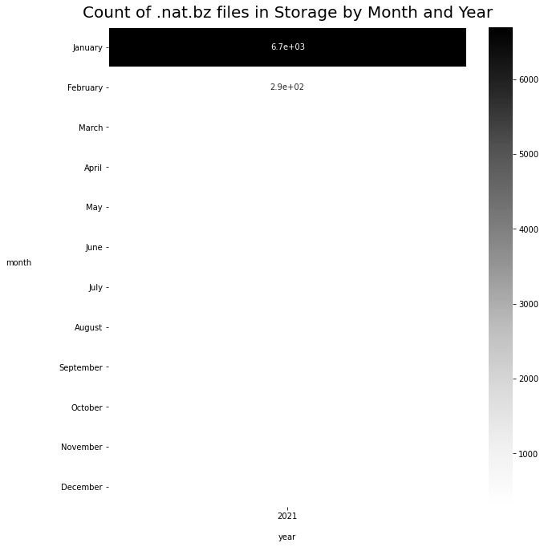

EUMETSAT and Google Cloud Platform (GCP)¶
Setup¶
GCP Helpers¶
First need a couple of helper functions to work with Google Cloud Platform.
Ideally the principles will transfer easily to other cloud providers if necessary.
First we want to be able to list files ('blobs') in a Google Cloud storage bucket, and get the metadata for a specific file ('blob').
We also want to be able to upload a file ('blob') to a storage bucket in an efficient way.
Checking existing saved data in Google Cloud Storage¶
Finding out how much data has been downloaded for different years in the OCF native data bucket.
BUCKET_NAME = "solar-pv-nowcasting-data"
PREFIX = "satellite/EUMETSAT/SEVIRI_RSS/native/2019/01/01"
blobs = list_blobs_with_prefix(BUCKET_NAME, prefix=PREFIX)
print(f'There are {len(blobs)} files')
There are 277 files
Lets see how large the data for the whole of 2018 is - this may take a few minutes to run.
storage_client = storage.Client()
PREFIX = "satellite/EUMETSAT/SEVIRI_RSS/native/2018/"
# Note: Client.list_blobs requires at least package version 1.17.0.
blobs_ = storage_client.list_blobs(BUCKET_NAME, prefix=PREFIX)
sizes = []
for blob in blobs_:
sizes.append(blob.size)
sum(sizes) / 1e9
2443.493799523
2018 contains 2.4TB of data
Note that using the storage client to return blobs returns an iterable of blob metadata objects.
From those we've extracted the names. We can go backwards from the names to interact with the blobs.
df = pd.DataFrame(blobs, columns=['blobs'])
df = df[df['blobs'].str.endswith('.nat.bz2')] # only compressed data files
df['datetime'] = pd.to_datetime(df['blobs'].str.slice(start=37, stop=53), format="%Y/%m/%d/%H/%M")
It is helpful to see by month how many data files already exist as compressed .nat files.
Note that this is not looking at files reprojected and stored in the Zarr database.
months_in_order = ['January', 'February', 'March', 'April', 'May', 'June', 'July', 'August', 'September', 'October', 'November', 'December']
blobs_by_month = df\
.assign(year=lambda x: x['datetime'].dt.year)\
.assign(month=lambda x: x['datetime'].dt.month_name())\
.groupby(['month', 'year']).count()['blobs'].to_frame()\
.reset_index()\
.pivot(index='month', columns='year', values='blobs')\
.reindex(months_in_order)
blobs_by_month
| ('year', 'month') | ('2019', 'Unnamed: 1_level_1') |
|---|---|
| January | 276 |
| February | nan |
| March | nan |
| April | nan |
| May | nan |
| June | nan |
| July | nan |
| August | nan |
| September | nan |
| October | nan |
| November | nan |
| December | nan |
And lets plot this
# credit: https://dfrieds.com/data-visualizations/visualize-historical-time-comparisons.html
figure, axes = plt.subplots(figsize=(10, 11))
sns.heatmap(blobs_by_month, annot=True, linewidths=.5, ax=axes, cmap="Greys")
axes.axes.set_title("Count of .nat.bz files in Storage by Month and Year", fontsize=20, y=1.01)
axes.axes.set_ylabel("month", labelpad=50, rotation=0)
axes.axes.set_xlabel("year", labelpad=16);
plt.yticks(rotation=0);

Sometimes we'll want all of the original (uncompressed) filenames - for example to compare with the results of the EUMETSAT API so we can work out whether we should request a file or not.
We'll make a function to get original filenames from compressed or uncompressed files stored as blobs on GCP.
filenames = df['blobs'].str.split('/').str[-1].str.replace('.bz2', '')
PREFIX = "satellite/EUMETSAT/SEVIRI_RSS/native/2019/10/01"
filenames = get_eumetsat_filenames(BUCKET_NAME, prefix=PREFIX)
len(filenames)
68202
Write metadata to bigquery¶
For cloud storage functions, storing metadata in a RDBS seems useful. BigQuery is a low hassle way to achieve this and can scale to lots of data with ease.
Downsides are rather inflexible migrations and updates.
# write_metadata_to_gcp(df, 'test', 'solar-pv-nowcasting')
As well as writing to BigQuery, we also want to query it. We'll write a small wrapper that allows us to send any SQL query and get results as a pandas DataFrame. Naturally we need to know the GCP project id, and the BigQuery table name.
Downloading: 100%|█████████████████████████████████████████████████████████████████████| 1/1 [00:00<00:00, 1.30rows/s]
'2020-12-03 19:14'